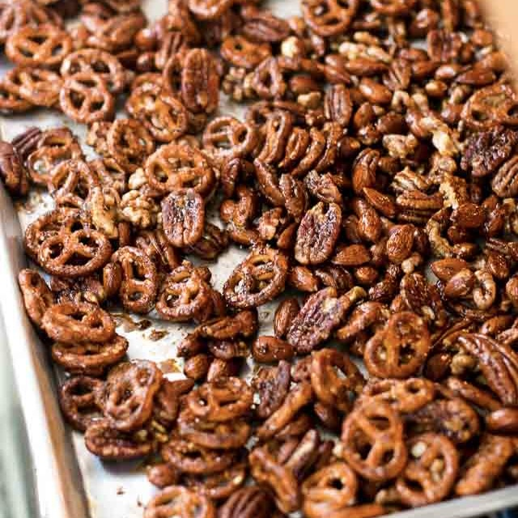

SPICED PRETZEL MIX

DESCRIPTION
Glazing the nuts with spices and adding a touch of sweetness, makes this the perfect nibble before dinner with an aperitif.
I melt the butter in a large bowl, so I can do all the mixing in that bowl, making one less thing for me to wash as well.
Note that the salt is added after the nuts are stirred, so it doesn’t dissolve. And be sure to use coarse salt, which has
an appealing, crunchy texture and more delicate flavor than ordinary table salt.
INGREDIENTS
- 2 cups raw nuts - I prefer pecans (200g)
- 2 cups small pretzel twists (100g)
- 1 T melted butter (15g)
- 3 T dark brown sugar (45g)
- 1 1/2 T maple syrup
- 1/2 t cinnamon
- 3/4 t cayenne pepper
- 1 t kosher or flaky sea salt
DIRECTIONS
- Spread the nuts on a baking sheet and roast at 350 degrees for 10 minutes
- In a medium bowl, mix the melted butter, brown sugar, maple syrup, cinnamon,and cayenne
- Add the warm nuts, stirring until coated. Add salt and pretzels and stir until mixture is completely coated
- Spread the mixture back on the baking sheet. Bake at 350 degrees for 12-18 minutes, stirring twice.
- Remove from oven.
- Separate the nuts and pretzels as they cool.
- Store in an airtight container.